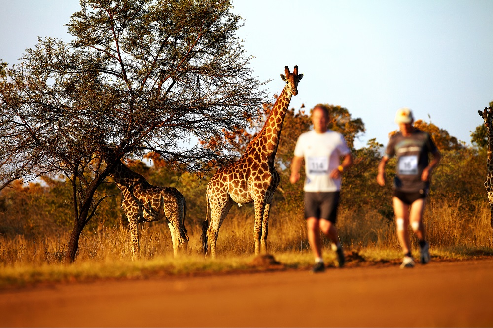
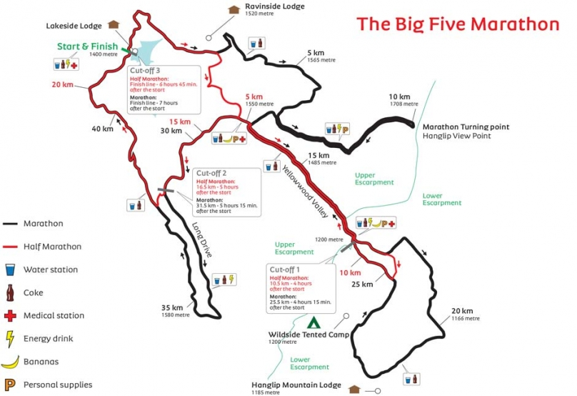
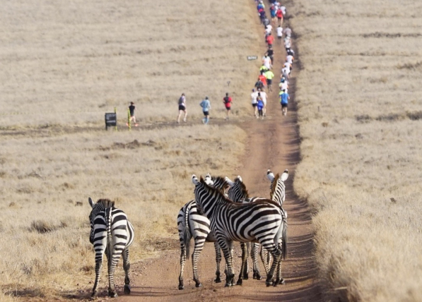

🦁 賽事名片與封面
南非五大野生動物馬拉松 (Big Five Marathon)
奔馳於無圍欄非洲大草原，與「非洲五霸」共處同一片天地的終極生態跑旅
🏃 賽事基本定位
UNESCO 生態圈
- 創辦機構：2005 年由丹麥知名冒險旅遊機構 Albatros Adventure 創立
- 地理位置：南非北部林波波省恩塔貝尼野生動物保護區（22,000 公頃）
- 生態核心：全程無人工圍欄隔絕，直面非洲五霸（獅、象、水牛、豹、犀牛）
- 全球殊榮：《富比士》雜誌評選為全球十大最值得造訪的生態跑旅賽事
- 嚴格管制：為維護脆弱生態與人身安全，全球參賽名額嚴格限制 300 人以內
無圍欄保護區
非洲五霸棲息地
限量 300 名
22,000 公頃無圍欄大草原 ｜ 與非洲五大野生猛獸共處同一天地
🌍 跑旅核心精神
荒野敬畏
- 生態定位：跑者不是這片土地的主人，而只是野生動物世界裡的短暫訪客
- 極限地形：近 1,500 公尺高原稀薄空氣、43 度黃木谷水泥陡坡與 10 公里深沙地
- 專屬獵遊：官方全包式 6 晚 / 7 晚 Safari 套裝，賽前 3 小時吉普車勘查賽道
- 維安戒護：低空巡邏直升機盤旋、30 名武裝巡邏員與 4x4 車隊全程戒護
不追求個人 PB ｜ 在嚴酷地貌與浩瀚星空下重新定義體能極限

🦁
奔馳於無圍欄非洲大草原
圖片路徑：images/bigfive_01.jpg
圖 1：恩塔貝尼野生大草原 ｜ 奔跑於無人工圍欄隔絕的原生動物棲息地
📋 賽事基本資訊
競賽規程與極限數據
限量 300 名跑者的高原生態挑戰，全包式獵遊套裝與嚴格年齡規範
⏱️ 舉辦時程與組別
名額嚴限
- 舉辦時間：每年 6 月中旬（南非冬季，氣候乾燥適跑）
- 未來日期：2026/6/13、2027/6/19、2028/6/17
- 競賽組別：全馬 42.195 km（黑布）、半馬 21.097 km（紅布）
- 年齡限制：全程馬拉松需滿 18 歲，半程馬拉松需滿 16 歲
- 晶片配戴：配發兩張晶片號碼布，須佩戴於前胸與後背
全馬限 18 歲
半馬限 16 歲
⛰️ 垂直爬升與海拔
極限高低差
- 累積爬升：全馬累積爬升約 885 至 900 公尺
- 極限落差：賽道最高點與最低點落差超過 540 公尺
- 基準海拔：全線位於海拔近 1,500 公尺高原，空氣相對乾冷稀薄
- 劇烈溫差：白天 15°C~25°C 陽光充足，清晨夜間驟降至 0°C
- 時間預估：完賽時間通常比平地馬拉松增加 25% 至 30% 以上
爬升 900m
落差 540m
🏜️ 賽道地質與生態
80% 越野
- 越野路面：約 80% 為未鋪裝紅土、碎石、岩石與深層鬆軟沙地
- 自然環境：隸屬 Waterberg 生物圈，為完全無瘧疾健康環境
- 五霸共處：賽道直接穿越獅群活動領地，沿途可見象群與水牛
- 路線彈性：若動物靠近賽道，大會將微調路線或延後起跑
- 跑者守則：若巡邏員要求登車回避，跑者必須無條件服從
紅土碎石
無瘧疾環境
🛡️ 立體安全防護體系
武裝警戒
- 空中直升機：配置直升機在賽道上空持續低空盤旋監控猛獸
- 武裝巡獵員：約 30 名專業 Rangers 手持步槍部署於補給站與險段
- 機動吉普車：多輛 4x4 越野車在賽道巡視，兼具警戒與醫療救援
- 前夜追蹤：開賽前一晚對獅群進行精準追蹤與棲息位置盯防
- 安全承諾：創辦以來維持完善防護，人身安全具備嚴謹保障
直升機監控
30 名武裝巡邏員
⚡ 賽道結構與魔王路段
43 度極陡水泥坡與 10 公里雙軌深沙地
征服南半球最陡坡道黃木谷，與深陷 20 公分鬆軟沙地的體能考驗
🗺️ 賽道分段結構剖析
全馬 42.195 km
- 起跑適應（0~10 km）：高原大草原開闊紅土碎石徑，需平穩節奏適應高原呼吸
- 黃木谷陡降（11~14 km）：衝入 43 度極陡水泥斜坡，股四頭肌承受劇烈離心衝擊
- 深沙長廊（15~24 km）：長達 10 公里越野車雙軌深沙地，每步深陷 20 公分，步幅驟縮
- 黃木谷爬升（25~28 km）：逆向原路爬升 43 度水泥坡，南半球最陡峭路段步步為營
- 草原終章（29~42.195 km）：穿過野生動物灌木棲息區，通過終點完成極限洗禮
賽前 3 小時吉普車巡勘 ｜ 提前熟記補給站與沙地地貌
🛑 兩大地獄考驗與信物手環
信物驗證
- 黃木谷（Yellowwood Valley）：43 度水泥坡，去程務必採「S 型鋸齒跑法」減緩膝蓋衝擊
- 專屬信物手環（Wristband）：大會於黃木谷水站發放信物手環，終點無手環直接取消資格
- 雙軌深沙地（Sand Section）：長達 6 英哩鬆軟深沙，小腿肌群負擔極重，極易引發抽筋
- 嚴格關門時間：全馬第 1 關門點（26.5 km / 4:15）、第 2 關門點（32.5 km / 5:30）、終點限時 7 小時（半馬限時 6:45）
出沙地強烈建議換穿乾淨跑襪 ｜ 嚴禁遺失信物手環

🏜️
黃木谷陡坡與深沙地賽道
圖片路徑：images/bigfive_02.jpg
圖 2：黃木谷極陡坡道 ｜ 43 度極限斜度考驗跑者股四頭肌與意志力
🎟️ 報名資格與搶票攻略
限量 300 名與全包式 Safari 行程
不開放單獨購票，官方全包式獵遊與住宿套裝的報名機制
⛺ 6 晚經典套裝行程
核心推薦
- 營地住宿：Wildside 帳篷營地、Lakeside Lodge 或 Legend Safari Resort
- 包含項目：約翰尼斯堡機場往返專車接送、全程三餐與保證參賽名額
- 獵遊車巡：早晚開篷 4x4 Safari 車巡、賽前 3 小時賽道實地勘查日
- 慶典晚宴：賽後傳統露天 Boma 營火慶功晚宴與南非炭火烤肉（Braai）
- 報名時程：名額極度限量，報名於行程出發前 90 天正式截止
6 晚住宿全包
賽前勘查日
🌍 7 晚深度人文套裝
歷史人文
- 住宿規劃：前 2 晚 Zebra Stables 渡假村 + 後 5 晚 Legend Safari Resort
- 人文巡禮：參訪索維托（Soweto）黑人文化樞紐與種族隔離博物館
- 歷史遺跡：參觀 Hector Pieterson 紀念館與 Zebra 保護區專屬生態導覽
- 賽事權益：包含 6 晚經典套裝全部賽事參賽權、賽道巡勘與營火晚宴
- 適合跑者：期望兼顧南非近代歷史人文與野生動物跑旅的跑者
索維托文化
種族隔離博物館
🦁 賽後延伸：克魯格巡禮
延伸 4 晚
- 營地地點：Manyeleti 保護區 Khoka Moya Camp（賽後加購 4 晚）
- 地理優勢：緊鄰舉世聞名的克魯格國家公園（Kruger National Park）
- 叢林冒險：原始灌木林樹頂高空溜索冒險（Zipline）與徒步尋蹤
- 全景之路：探訪上帝之窗（God's Window）、波克幸運壺穴與薩爾峽谷
- 生態密度：極高密度大型野生動物觀測機會，深度沉浸原始非洲
克魯格國家公園
上帝之窗
🌊 賽後延伸：瀑布與大象
跨國 4 晚
- 跨國巡禮：辛巴威維多利亞瀑布 + 波札那喬貝國家公園（4 晚）
- 世界奇景：包含約翰尼斯堡至辛巴威來回機票，親臨世界三大瀑布之一
- 大象王國：波札那 Chobe 國家公園探訪世界最大規模野生非洲象群
- 水上晚宴：尚比西河（Zambezi River）日落遊船晚宴與河馬鱷魚觀測
- 極致跑旅：一次收穫世界自然奇景瀑布與跨國原始大象棲地的夢幻體驗
維多利亞瀑布
喬貝象群獵遊
🚗 交通住宿與領物寄物
機場接駁、營地住宿與嚴謹報到規範
從約翰尼斯堡前往恩塔貝尼保護區，官方接駁、裝備規範與行李保管
✈️ 機場往返與官方專車
大會接駁
- 集結門戶：約翰尼斯堡奧利弗·坦博國際機場（JNB）為唯一官方集結點
- 專車接送：大會安排舒適空調長途巴士專車接駁直達保護區
- 行車時間：單程車程約 3.5 至 4 小時，沿途欣賞南非高地荒原風光
- 園區管制：保護區內部未開放自駕進入，全程由大會 4x4 車隊統一調度
- 返程服務：行程結束當日安排專車接送返回 JNB 機場搭機返國
班機抵達與離境時間須符合大會接駁窗口
⛺ 野生保護區營地住宿
自然共融
- Wildside 營地：豪華帆布帳篷營地，夜間可聆聽大草原蟲鳴與獸吼
- Legend 渡假村：提供標準度假飯店級設施、景觀泳池與舒適起居
- 夜間守則：保護區入夜後嚴禁跑者單獨走動，需由營地守衛陪同護送
- 全包膳食：包含豐盛歐陸式早餐、原野叢林午餐與南非傳統燒烤晚餐
- 無痕山林：嚴格遵守自然保育規範，保護區內嚴禁遺留任何廢棄物
無瘧疾環境 ｜ 享受純粹原始生態與安全起居
📦 報到巡勘與終點寄物
賽前勘查
- 賽道巡勘（Inspection）：賽前一日搭乘 4x4 車隊實勘全賽道 3 小時
- 技術會議：巡勘後召開強制性技術簡報會議，領取號碼布與計時晶片
- 雙號碼布配戴：兩張晶片號碼布須牢固固定於胸前與後背，嚴禁折疊
- 起終點寄物：大會設有寄物處，跑者可寄放賽後防寒衣物與換洗衣物
- 沙地備用襪點：大會於深沙地路段出口水站提供預放乾淨備用襪服務
賽道巡勘日為必備流程 ｜ 掌握路面地貌與水站
🎒 跑步裝備、補給與氣候應變
越野抓地鞋、深沙防護與日夜溫差
應對乾燥高原氣候與深沙摩擦，個人化能量補給與保暖防護
☀️ 高原氣候與溫差對策
20°C 溫差
- 日間適跑溫：白天陽光充足乾燥，氣溫約 15°C~25°C，紫外線極強
- 清晨夜間低溫：日夜溫差劇烈，清晨起跑與夜間可驟降至 0°C（32°F）
- 防曬三件套：必備遮陽帽、越野太陽眼鏡與高係數 SPF 30 以上防曬乳
- 早晚禦寒：參加 Safari 與營火晚宴必備防風厚外套、保暖毛帽與手套
- 定時補水：高原乾冷氣候汗水揮發極快，即使不覺口渴亦須定時補水
劇烈日夜溫差 ｜ 隨身備妥早晚防寒層與防曬裝備
👟 跑鞋防沙與裝備配置
深齒越野鞋
- 跑鞋選擇：強烈建議穿著具備深齒紋的越野跑鞋，確保碎石與紅土抓地
- 防沙綁腿：可搭配輕量越野防沙套（Gaiters）防止細沙灌入鞋內
- 預備跑襪：隨身攜帶或在水站預置乾淨跑襪，通過 10 公里深沙地後立即更換
- 防磨防泡：腳趾與腳底預先塗抹防磨膏或貼透氣膠布，防止水泡爆發
- 機能服裝：排汗短袖搭配機能壓縮跑褲，防護灌木刮刺並穩定肌肉
10 公里深沙是水泡溫床 ｜ 換穿乾淨跑襪是完賽秘訣
🍌 賽道補給與個人能量品
自備能量膠
- 官方水站：沿途設有多處水站，供應純水、運動電解質飲料與新鮮香蕉
- 能量膠自備：保護區內部無法採購能量膠（Gels），跑者須自國外自備充足
- 鹽錠電解質：乾燥原野下流汗不易察覺，建議每 45 分鐘補充一次鹽錠
- 陡坡步頻策略：黃木谷下坡不可暴衝，上坡採小碎步推蹬以保存體力
- 關門時間意識：隨時關注 26.5 km（4:15）與 32.5 km（5:30）關門時限
保護區無能量補給品售賣 ｜ 能量膠與鹽錠務必自備
🗺️ 賽後觀光與跳轉導航
Boma 營火慶功與世界荒野巡禮
體驗南非傳統星空營火烤肉晚宴，銜接下一站世界遺產古文明賽事
🌟 賽後慶祝與生態探索
非洲營火
- Boma 營火晚宴：賽後夜間於傳統露天營地享用南非炭火烤肉（Braai）與營火晚會
- 榮耀頒獎典禮：在浩瀚非洲星空下領取獨一無二的五大動物完賽獎牌與證書
- 敞篷吉普車巡遊：賽後悠閒搭乘 Safari 越野車，近距離觀賞獅群、象群與長頸鹿
- 跨國奇景延伸：可銜接加購行程前往克魯格國家公園、維多利亞瀑布與喬貝大象保護區
露天炭火烤肉 Braai ｜ 敬畏大自然與生命極限的永恆回憶
🧭 賽事跳轉導航
雙向導航
- 下一站賽事：[[吳哥窟王朝馬拉松]]（亞洲熱帶雨林與千年世界遺產古文明賽道）
- 賽事主題：進入第三主題「世界遺產與自然荒野賽道」
- 總索引回訪：隨時返回首頁索引查看 12 場賽事矩陣與知識圖譜

🏅
征服非洲草原完賽榮耀
圖片路徑：images/bigfive_03.jpg
圖 3：星空下營地慶功 ｜ 征服 43 度陡坡與非洲大草原的榮耀完賽證書